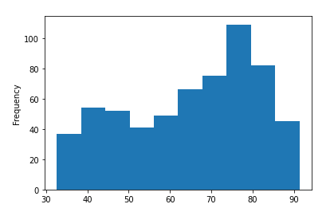

Great Expectations: Always Know What to Expect From Your Data
Contents
3.1. Great Expectations: Always Know What to Expect From Your Data¶
3.1.1. What is Great Expectations?¶
Great Expectations is a leading Python library that allows you to validate, document, and profile your data to make sure the data is as you expected.
Great Expectations go through a checklist to make sure the data passes all these tests before being used.

There are many tools out there that that allow you to create tests to validate your data. However, I like Great Expectations for several reasons:
Automatically create a set of tests for your data: It can be a pain to create a comprehensive set of tests for your data. Great Expectations eliminates that pain by suggesting some tests based on the characteristics of your data.

Create your expectations and configure your data source through notebooks: It can also be difficult for some people to create expectations using JSON. Great Expectations makes it easy for you to create your expectations using Jupyter Notebook!
Create nice data documentation: Great Expectations creates clean, human-readable documentation that allows you to quickly understand your data and the validation results.

Integrate seamlessly with DAG execution tools: Great Expections integrates seamlessly with DAG execution tools such as Airflow, dbt, Prefect, Dagster, Kedro, etc.
In this section, I will show you how to get started with Great Expectations and answer some questions you might have about this tool.
To install Great Expectations, type:
pip install great_expectations
3.1.2. Getting Started¶
3.1.2.1. Create Data Context¶
Data Context manages your project configuration. To create a new data context using the V3 (Batch Request) API, type:
$ great_expectations --v3-api init
And the new directory with the following structure will be created in your current directory!

Functions of these directories:
The file
great_expectations.ymlcontains the main configuration of your deployment.The directory
expectionsstores all your Expectations as JSON files.The directory
pluginsholds code for any custom plugins you might have.The directory
uncommittedcontains files that shouldn’t be in version control.
3.1.2.2. Great Expectations Workflow¶
Great Expectations generally includes 3 steps: connect to data, create expectations, and validate your data.

In the next sections, we will learn how each of these steps looks like.
3.1.3. Connect to Data¶

As a demonstration, I will split the advertising dataset downloaded from Kaggle into two datasets: first_data.csv and second_data.csv . Specifically,
first_data.csvcontains data from January 2016 to April 2016second_data.csvcontains data from May 2016 to July 2016
These datasets are stored under the directory data .

To connect to our data, type:
$ great_expectations --v3-api datasource new
And you will be asked some questions like the below to set up your connection.

We can either connect Great Expectations to the files on our system or SQL. Here we chose to:
connect it with files on our system
process our files with Pandas
specify
datato be the directory that stores all of our data files.
After answering all of these questions, a notebook will be automatically created for you! This notebook allows you to configure your new Datasource. Datasource tells Great Expectations where your data lives and how to get it.

View the notebook here.
In this notebook, you can specify the name of your Datasource by editing the value of the variable datasource_name .
datasource_name = "first_data"
This code block allows us to create and customize the configuration of our Datasource.
example_yaml = f"""
name: {datasource_name}
class_name: Datasource
execution_engine:
class_name: PandasExecutionEngine
data_connectors:
default_inferred_data_connector_name:
class_name: InferredAssetFilesystemDataConnector
base_directory: ../data
default_regex:
group_names:
- data_asset_name
pattern: (.*)
default_runtime_data_connector_name:
class_name: RuntimeDataConnector
batch_identifiers:
- default_identifier_name
"""
In the configuration above, InferredAssetFilesystemDataConnector will search for files within the base directory with the regex you provide.
For example, since both files first_data.csv and second_data.csv are in the data directory, InferredAssetFilesystemDataConnector will detect these files and connect to them.
context.test_yaml_config(yaml_config=example_yaml)
Available data_asset_names (2 of 2):
first_data.csv (1 of 1): ['first_data.csv']
second_data.csv (1 of 1): ['second_data.csv']
After executing all cells in this notebook, the configuration of your Datasource will be added to great_expectations.yml!
Find other ways to configure your Datasources here.
3.1.4. Create Your First Expectations¶

Now it comes to the exciting part: create your first expectations! We will start with creating a new Expectation Suite. An Expectation Suite is a collection of Expectations. To create a new Expectation Suite, type:
$ great_expectations --v3-api suite new

You can manually or automatically create expectations using a sample batch of data. Here, I want to automatically create expectations based on the data first_data.csv .
After going through all questions, another notebook will be automatically created for you. In this notebook, you can select columns and other factors that you care about and let a profiler write some candidate expectations for you.

The first cell of this notebook will load the data specified in your Datasource. This is very convenient because you can visualize and learn some characteristics of your dataset.
validator.head(n_rows=10, fetch_all=False)
You can also specify which columns to ignore so that Great Expectations will not create expectations for those columns.
After running the rest of the cells in the notebook, a report similar to the below will be created for you!
Click here to view the documentation
We might want fewer or more expectations than the ones created by Great Expectations. That’s okay! We can edit these expectations by typing:
$ great_expectations --v3-api suite edit first_data.csv.warning
first_data.csv.warning is the name of our Expectation Suite. After running the command, another notebook will be created that allows us to edit our Expectation Suite.

In this notebook, we can create expectations for the entire table and for each column. All expectations start with .expect_ , which makes autocompleting easy. Let’s see how some of these expectations look like.
3.1.4.1. Table Expectations¶
Here, we can specify expectations that are related to the entire table, such as expecting table columns to be in a certain order.
validator.expect_table_columns_to_match_ordered_list(column_list=['Unnamed: 0', 'Daily Time Spent on Site', 'Age', 'Area Income', 'Daily Internet Usage', 'Ad Topic Line', 'City', 'Male', 'Country', 'Timestamp', 'Clicked on Ad'])
{
"result": {
"observed_value": [
"Unnamed: 0",
"Daily Time Spent on Site",
"Age",
"Area Income",
"Daily Internet Usage",
"Ad Topic Line",
"City",
"Male",
"Country",
"Timestamp",
"Clicked on Ad"
]
},
"exception_info": {
"raised_exception": false,
"exception_traceback": null,
"exception_message": null
},
"meta": {},
"success": true
}
3.1.4.2. Column Expectations¶
You can create expectations for different columns. Let’s start with creating expectations for the column Daily Time Spent on Site .
Before creating the expectations, you might want to learn the distribution of the column Daily Time Spent on Site . Great Expectations allows you to analyze your data the same way you would with a normal pandas DataFrame.
validator.active_batch.data.dataframe['Daily Time Spent on Site'].describe()
count 610.000000
mean 65.267049
std 15.852992
min 32.600000
25% 51.515000
50% 68.330000
75% 78.525000
max 91.370000
validator.active_batch.data.dataframe['Daily Time Spent on Site'].plot.hist()

Next, we will create some expectations based on the distribution of the column Daily Time Spent on Site .
validator.expect_column_min_to_be_between(column='Daily Time Spent on Site',
max_value=40, min_value=30)
validator.expect_column_max_to_be_between(column='Daily Time Spent on Site',
max_value=100, min_value=85)
validator.expect_column_mean_to_be_between(column='Daily Time Spent on Site',
max_value=70, min_value=55)
We also expect the column not to be null and be of type float.
validator.expect_column_values_to_not_be_null(column='Daily Time Spent on Site')
validator.expect_column_values_to_be_in_type_list(column='Daily Time Spent on Site',
type_list=['FLOAT', 'FLOAT4', 'FLOAT8', 'FLOAT64', 'DOUBLE', 'DOUBLE_PRECISION',
'NUMERIC', 'FloatType', 'DoubleType', 'float_', 'float16', 'float32',
'float64', 'number', 'DECIMAL', 'REAL'])
We can also make sure the proportion of unique values in the column City to be between 0.9 and 0.99.
validator.expect_column_proportion_of_unique_values_to_be_between(
column='City',
max_value=0.999, min_value=0.9
)
Since many of these expectations are automatically created, it won’t take a lot of effort for us to edit the functions to fit our expectations. Find all built-in expectations here.
Congratulations! You have just created your first Expectation Suite. This Suite will be saved in the file warning.json under the directory below:
great_expectations/expectations
└── first_data
└── csv
└── warning.json
First few lines of warning.json .
{
"data_asset_type": null,
"expectation_suite_name": "first_data.csv.warning",
"expectations": [
{
"expectation_type": "expect_table_columns_to_match_ordered_list",
"ge_cloud_id": null,
"kwargs": {
"column_list": [
"Unnamed: 0",
"Daily Time Spent on Site",
"Age",
"Area Income",
"Daily Internet Usage",
"Ad Topic Line",
"City",
"Male",
"Country",
"Timestamp",
"Clicked on Ad"
]
},
"meta": {}
},
.......
}
Now you can easily use this file to edit some expectations without rerun the entire notebook!
3.1.5. Validate Your Data Using a Checkpoint¶
Now that you have created the expectations, how do you validate the new data?
That is when Checkpoint comes in handy. Checkpoint bundles batches of data with the corresponding Expectation Suite for validation.

To create your first Checkpoint, type:
$ great_expectations --v3-api checkpoint new first_checkpoint
And a notebook like below will be created for you!

View the notebook here.
In this notebook, you can configure your Checkpoint. Specifically,
datasource_namespecifies the Datasourceexpectation_suite_namespecifies the name of the Expectations Suitedata_asset_namespecifies the dataset to validate
my_checkpoint_name = "first_checkpoint" # This was populated from your CLI command.
yaml_config = f"""
name: {my_checkpoint_name}
config_version: 1.0
class_name: SimpleCheckpoint
run_name_template: "%Y%m%d-%H%M%S-my-run-name-template"
validations:
- batch_request:
datasource_name: first_data
data_connector_name: default_inferred_data_connector_name
data_asset_name: second_data.csv
data_connector_query:
index: -1
expectation_suite_name: first_data.csv.warning
"""
After uncommenting and running the last cell of this notebook, you will see a table that shows whether your validation fails or succeeds. Luckily, the data second_data.csv passes all tests!

To view the detailed information about the results of the test, click the link under Run Time, and you will see a report like below:

View the full report here.
Your new checkpoint is now saved under:
great_expectations/checkpoints
└── first_checkpoint.yml
In the future, if you want to use the same Expectation Suite to validate another data, let’s say third_data.csv , you can just switch second_data.csv with third_data.csv :
name: first_checkpoint
runtime_configuration: {}
validations:
- batch_request:
datasource_name: first_data
data_connector_name: default_inferred_data_connector_name
data_asset_name: third_data.csv # new data to validate
data_connector_query:
index: -1
expectation_suite_name: first_data.csv.warning
Instead of going back to the notebook and rerunning the last cell, you can just run the Checkpoint in your terminal!
$ great_expectations --v3-api checkpoint run first_checkpoint

Pretty cool, isn’t it?
3.1.5.1. Validate Two Different Datasets at Once¶
Sometimes, you might want to validate two different datasets at once using the same Expectation Suite. That can be easily done by adding another batch_request :
validations:
# Validate second_data.csv
- batch_request:
datasource_name: first_data
data_connector_name: default_inferred_data_connector_name
data_asset_name: second_data.csv
data_connector_query:
index: -1
expectation_suite_name: first_data.csv.warning
# Validate third_data.csv
- batch_request:
datasource_name: first_data
data_connector_name: default_inferred_data_connector_name
data_asset_name: third_data.csv
data_connector_query:
index: -1
expectation_suite_name: first_data.csv.warning
Let’s try to run again and see what we get.

Nice!
3.1.6. Q & A¶
What if Great Expectations do not have the Expectations I want?
If none of the built-in Expectations are what you’re looking for, you can easily create custom expectations.
What is the benefit of using Jupyter Notebook?
It can be challenging to create your first expectations using a JSON file. Jupyter Notebook makes it easy for you to edit the premade Expectations in notebook’s cells. You can also visualize your data before writing Expectations.
Do I need to use Jupyter Notebook all the time?
No, Jupyter Notebook makes it easier for beginners to create Expectations, but when you get a hang of it, you can create new Expectations in a JSON file and create new Checkpoints in a YAML file.
If you don’t like any of these methods, I recommend checking out the Great Expectations’ documentation for other ways to create Expectations and Checkpoints.
Why are there so many customizations in Great Expectations?
These customizations allow users to integrate Great Expectations with their existing frameworks easily. Don’t be scared of these customizations. I recommend that you start from the basics then customize one piece of code at a time to fit your goal.